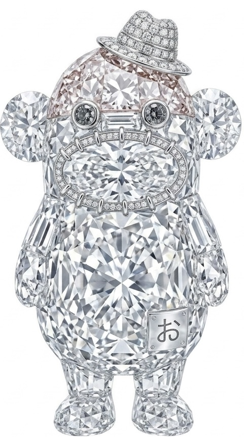
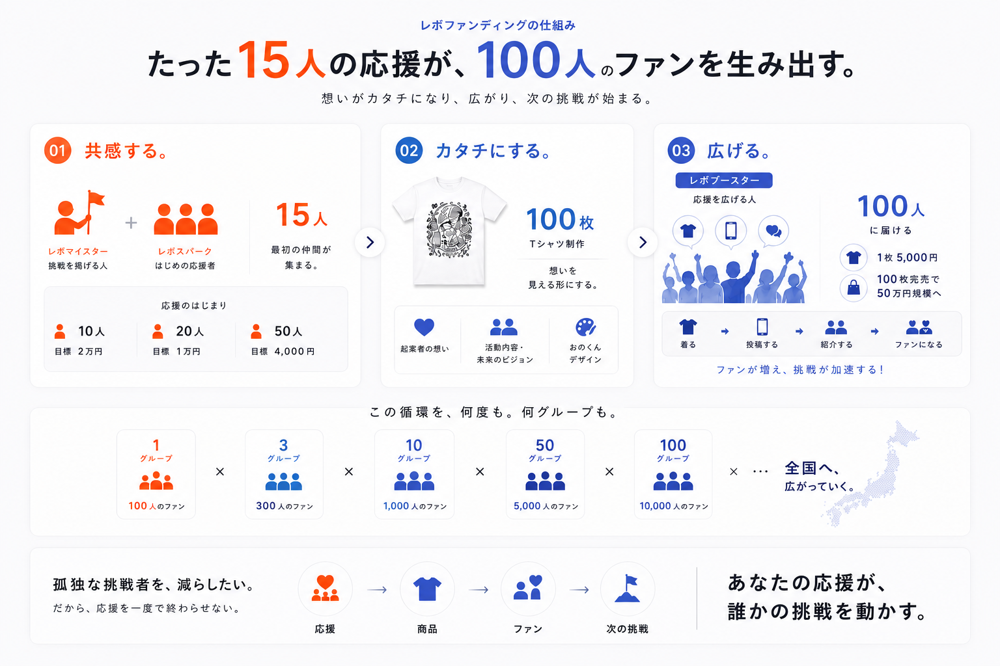

挑戦者をリーダーに変える、最初の15人
レボスパークは、まだ誰も知らない挑戦の隣に最初に立つ人です。
レボファンディング
応援者への投資配当・出資・収益分配を目的としたサービスではありません。余剰分は起案者の活動支援として還元します。
ひとりの旗が、群れになる。
Order
一人で旗を掲げる人は、最初はただの「変わった人」に見えます。
その隣に、最初の一人が立つ。二人目が続く。三人目で、それは群れになる。群れになった瞬間、様子を見ていた人たちが、走り出す。
挑戦者をリーダーに変えたのは、挑戦者自身ではありません。最初に隣に立った、一人の応援者です。
Origin
2012年、宮城県東松島市の仮設住宅。被災した主婦たちが、靴下を縫い始めました。合言葉は「がんばろう」ではなく、「めんどくしぇ」。
そのささやかな営みの隣に、最初の応援者が座りました。一人、また一人。気づけば、世界35万人の家族になっていました。
一本の糸から始まったものが、旗になった。
それが、おのくんです。私たちの原点です。
おのくん公式を見る
Mechanism
想いがカタチになり、広がり、次の挑戦が始まる。

レボスパークは、まだ誰も知らない挑戦の隣に最初に立つ人です。
これは商品ではありません。街に立てる、旗です。
着て歩けば、応援が街に公開されます。
人は、挑戦者を見て動くのではありません。「応援している、普通の人」を見て動きます。
応援が見えるほど、次の人の一歩は軽くなる。だから応援は、隠さず、着るんです。
理由は単純です。人の目に触れる回数が、一番多い形だから。
チラシは捨てられ、投稿は流れます。でも着られた旗は、街を歩き続けます。
「自分はTシャツを着ない」という人も、心配いりません。旗の立て方は、ひとつではないからです。
そして、Tシャツは最初の形にすぎません。応援が育てば、次は本かもしれない。イベントかもしれない。挑戦の数だけ、旗の形は増えていきます。
Cycle
旗を振って、終わりではありません。糸は切れずに、次の挑戦へつながっていきます。
最初の15人が、挑戦者の隣に立ちます。
15本の糸が、街に立てる旗になります。
着る、飾る、贈ることで、普通の人の応援が見えます。
応援が次の企画、次のロット、次の地域へつながります。
何度も、何グループも。この循環を広げます。
Action
火種を炎に変えるのは、最初の風。まだ誰も知らない挑戦の、最初の応援者になってください。
あなたの応援が、挑戦者から「孤独」を消します。
Tシャツが欲しいかどうかは、関係ありません。あなたがやることは、買い物ではなく、街に15本の旗を立てる作戦の一員になることです。
スパークに参加する応援者への投資配当・出資・収益分配を目的としたサービスではありません。
旗の立て方は、三つあります。どれでも、立派な旗振りです。
着て歩く。飾る。贈る。投稿する。紹介する。日常そのものが、誰かの旗振りになります。
ブーストに参加する応援者への投資配当・出資・収益分配を目的としたサービスではありません。
From Lab to Revo
それが、レボファンディングです。レボリストLabで生まれた小さな実験を、応援、商品、発信、ファン化、次の挑戦へ循環させます。
Revo Funding
挑戦者は、記録されます。でもムーブメントを起こしたのは、いつも、最初の応援者でした。